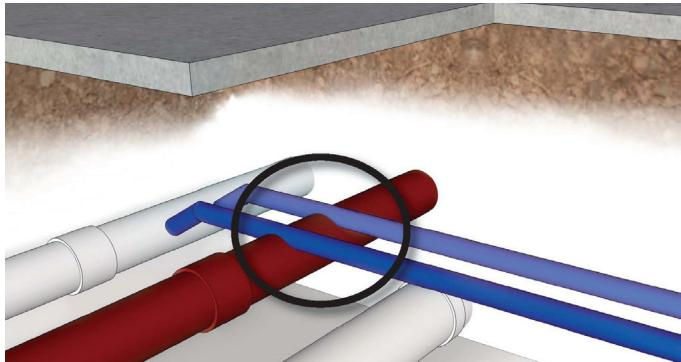
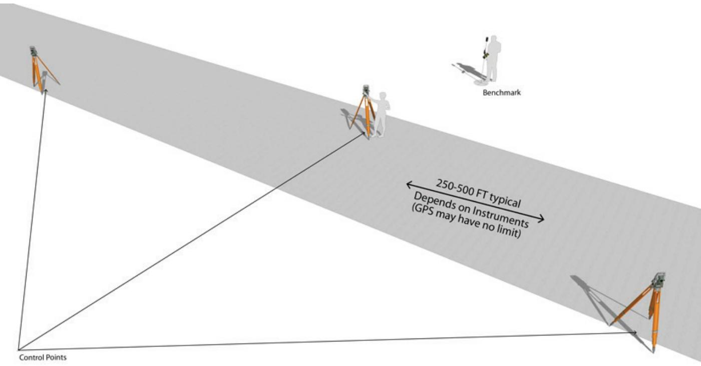
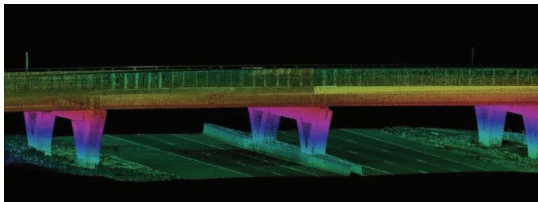
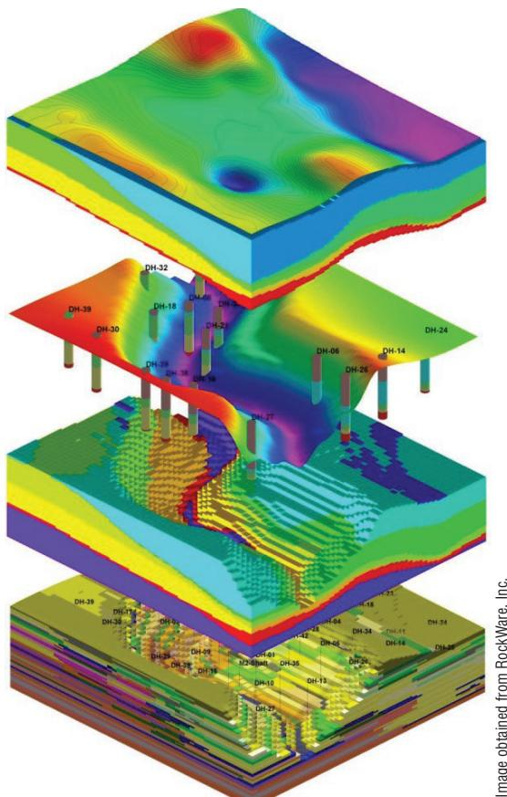
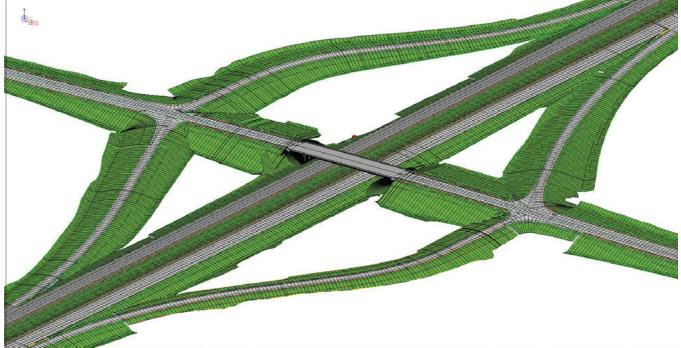
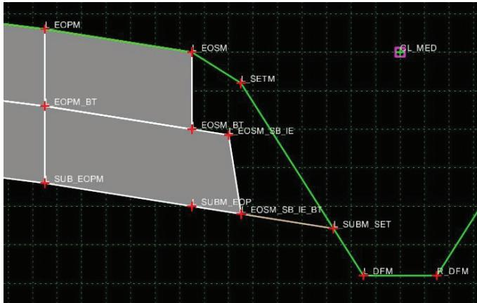
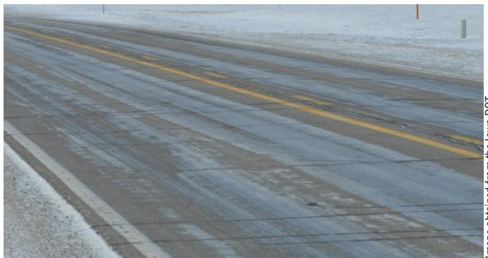
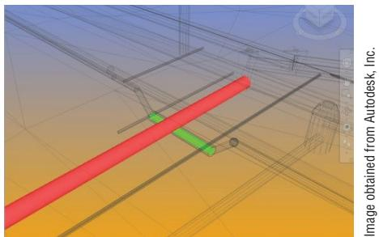

3D Engineering for Construction Accuracy
3‑D Engineering for Construction Accuracy is a workflow that generates a single, datum‑tied high‑resolution three‑dimensional model encompassing existing terrain, subsurface utilities, and design geometry to replace fragmented two‑dimensional representations [1][2]. By providing reliable data for clash detection, constructability analysis, precise earth‑work quantities, and automated machine guidance, it eliminates grading errors, utility conflicts, safety hazards, and costly rework that plague traditional design and staking practices [1][2]. The approach integrates accurate field surveys (total‑station, GPS, LiDAR) at roughly 250 ft intervals, rigorously error‑checked CAD inputs, continuous gap‑free surfaces for each pavement layer and utility, and a multi‑layer QA/QC regime that maintains ±0.1 ft grade tolerances and delivers files compatible with automated machine‑guidance equipment [1][2].
CP Tech Center Guides reports covering “3D Engineering for Construction Accuracy” also include the following subtopics: Concrete Mixing and 3D Modeling and Digital Terrain Model for Pavement Condition Analysis.
The Digital Terrain Model for Pavement Condition Analysis supplies the foundational ground surface data that anchors the 3D model, while Concrete Mixing and 3D Modeling applies this geometry by coupling calibrated batching with robotic total-station guidance to place concrete at elevations. [1][2][3]
Sources (6)
Sub-concepts (2)
Purpose and design objectives
The core engineering problem that 3‑D Engineering for Construction Accuracy seeks to solve is the lack of a single, precise three‑dimensional data set that reliably represents existing terrain, subsurface utilities and design geometry, leading to fragmented or inaccurate representations in traditional two‑dimensional designs, staking and quality‑control practices. This deficiency produces mis‑aligned construction documents, grading and elevation errors, undetected utility conflicts, safety hazards and costly rework—whether for airport concrete pavements that must meet strict grade tolerances and alignment specifications or highway corridors that require machine‑guidance. Accurate field surveys and datum‑tied high‑resolution 3‑D models are therefore required to provide the reliable information needed for clash detection, constructability analysis and consistent guidance of construction equipment. [1][2]
The following figure illustrates how such conflicts are identified through detailed 3D modeling.

Visualization of a hard clash between subsurface utilities in a 3D engineered model. [2]The image displays an isometric view of several cylindrical pipes, including red and blue conduits intersecting within a cutaway section of the ground beneath a concrete slab.
[1] — Ch. 5 (pp. 216–221); [2] — Ch. 1 (pp. 12–17), Ch. 2 (pp. 19–31), Ch. 3 (pp. 34–44), Ch. 4 (pp. 45–59)
The 3‑D engineering approach must satisfy a suite of functional, structural, durability, safety and serviceability objectives. Functionally, the model is required to deliver “Improved accuracy of design surfaces.” and provide reliable earth‑work quantities through precise survey control, as emphasized by “The importance of accurate survey control cannot be overstated, especially when using 3D methods.” Structurally, it must embed subsurface utilities, bridge‑berm designs and enable “Clash detection” so that built elements align with existing conditions before construction begins. Durability objectives are met by integrating geotechnical data—soil types, rock ledges, water tables—so that “Unsuitable soils, especially under pavements, may need to be removed to ensure a firm base for proper construction of the pavement.” Safety is a core requirement; “Perhaps the most important benefit of 3D technology is the improved safety of workers on the construction site,” achieved by locating control points away from operations, maintaining reliable communications and preventing line‑break injuries, as well as reducing worker exposure through off‑site layout. Serviceability is ensured through “Increased quality control” and continuous monitoring: “Serviceability is achieved through continuous monitoring of model accuracy, control point integrity and equipment performance throughout the paving operation,” while detailed electronic files are provided for GIS/facilities‑management databases (“accurate and detailed electronic files can be delivered to the utility operator for inclusion in their geographic information system (GIS) or facilities management database”). The approach also relies on “The control method relies on accuracy of surveying and accuracy of the 3D pavement model that is used to guide the slipform machine,” with “Error checking the data from the CAD files … before creating the 3D model” and regulation of alignment and elevation via outside reference lines (“The alignment and elevation of the paver shall be regulated from outside reference lines established for this purpose”). [1][2]
The following figure illustrates the practical application of these principles by showing survey control points on a typical stringless paving project.

Survey control points on a typical stringless paving project. [2]The figure depicts a surveying setup for a construction project, showing several total stations mounted on tripods positioned along the edge of a paved surface and at distant reference locations labeled as Control Points. This visualizes the precise survey control required to guide automated machinery and maintain grade tolerances in a 3-D engineering workflow for construction accuracy.
[1] — Ch. 5 (pp. 216–221); [2] — Ch. 1 (pp. 15–16), Ch. 2 (pp. 19–29), Ch. 3 (pp. 34–42), Ch. 4 (pp. 45–56)
Scope and applicability
3D engineering for construction accuracy is appropriate for concrete airport pavements where stringless paving can be guided by a verified 3‑D pavement model and accurate field‑surveyed control points tied to known benchmarks; it also applies to any highway pavement project—new construction or rehabilitation—that requires a full three‑dimensional representation of grading and all pavement layers. The approach is suited when the project demands enhanced stakeholder communication, rigorous design verification, subsurface utility engineering, precise earthwork estimates, safety‑critical checks such as driver sight‑distance, clear‑zone, and bridge vertical‑clearance verification, or analysis of snow drift in inclement weather. It supports applications that involve complex underground utilities, deep utilities adjacent to existing lanes, staging analyses, and long‑corridor projects where mobile LiDAR can provide continuous point clouds. Materials that can be modeled include concrete pavement surfaces, subbase layers, topsoil strips, respread layers, and geotechnical soil information for evaluating subgrade conditions. The models enable public presentations, quality‑assurance checks, provision of 3‑D files to contractors for grading or paving equipment, automatic detection of utility conflicts, and extension to 4‑D/5‑D constructability and cost integration before construction begins. [1][2]
The figure below illustrates how these 3D engineered models enable the calculation of clear zones and vertical clearances to enhance public safety.

3D point cloud visualization of a bridge structure and its substructure. [2]The figure displays a multi-colored three-dimensional representation of a highway overpass, including the deck, railings, and supporting piers.
[1] — Ch. 5 (pp. 216–221); [2] — Ch. 1 (p. 13), Ch. 2 (pp. 21–22), Ch. 3 (pp. 34–42), Ch. 4 (pp. 54–55)
The guides note several situations in which a conventional design approach supersedes full‑resolution 3‑D engineered modeling. When a project cannot meet the approval conditions for a stringless, model‑driven system—because the specification does not require laser or GPS reference and permits use of a stringline, or because a required trial field demonstration fails—the contractor must revert to traditional stringline staking. “Stringline paving is the more traditional method for paver elevation and steering control, and it is allowed by both FAA and DOD.” Similarly, if the CAD data that feed the 3‑D model have not been fully error‑checked or are subject to late changes, relying on a physical guideline avoids the risk of model‑based misalignments. “Error checking the data from the CAD files is one of the most important steps in data transformation and should be done before creating the 3D model for the paving.” Across agencies, other constraints also favor alternative methods. Where uniform CAD standards cannot be enforced, “The 2D plan set is the contractual design document,” and construction tolerances are not tightened by automated machine guidance. In regions with poor survey control, vertical errors of several inches can render a 3‑D model ineffective: “In states where survey control is inaccurate, 3D models can be off vertically by several inches.” Projects that require only modest accuracy, or where lane closures for detailed surveying are unsafe or impractical, or where budget and schedule do not allow the extensive fine‑tuning demanded by high‑resolution models, are better served by conventional total‑station, GPS surveys, aerial or mobile LiDAR, or simple 2‑D plans. Finally, equipment compatibility can be a show‑stopper; “Automated machine guidance systems are only capable of accepting specific file types,” and when contractors lack the hardware to receive, convert, or load those files, reliance on a single 3‑D model becomes impractical. [1][2]
[1] — Ch. 5 (pp. 216–221); [2] — Ch. 1 (pp. 15–16), Ch. 2 (pp. 19–30), Ch. 3 (pp. 34–44), Ch. 4 (pp. 49–55)
Design inputs and requirements
A complete 3‑D engineered model must incorporate all of the existing‑condition and design data needed to convey site, traffic, material, environmental, and geotechnical information. It should include a topographic survey of the project area, subsurface utility engineering (SUE) data, and any proposed utilities such as storm and sanitary sewers, water mains, and conduits. The model also needs the grading surface, drainage features like ditches, swales and culverts, pavement subbase and surface layers, sidewalks, trails, bridge structures with their appurtenances, and traffic‑related items such as signalization, underground wiring, and lighting. By embedding these elements the 3‑D model provides a comprehensive representation of both existing conditions and design intent for accurate construction planning. [2]
The following figure illustrates a geotechnical 3D model that visualizes both the above-ground surface and underlying geological layers.

Geotechnical 3D model showing above-ground surface and geological layers. [2]The figure displays a multi-layered three-dimensional visualization of subsurface geology, featuring distinct stratigraphic units represented by different colors and textures. Vertical cylindrical markers labeled with alphanumeric codes penetrate the various geological strata from the surface down to deeper levels.
[2] — Ch. 3 (pp. 41–42)
3D engineering for construction accuracy is governed by a set of federal, departmental, and agency specifications that define alignment control, data quality, geometric clearances, grading tolerances, and operational constraints. Paver alignment and elevation must be controlled from established outside reference lines: “The alignment and elevation of the paver shall be regulated from outside reference lines established for this purpose”. For Department of Defense projects the Unified Facilities Guide Specification adds that the stringline is only a guideline – “UFGS 32 13 14.13 (May 2024) also refers to the stringline as a “guideline” ” – and any proposed string‑less system must be described in detail, demonstrated in a trial field test, and proven satisfactory before paving begins: “For DOD paving projects, UFGS 32 13 14.13 (May 2024) requires that if stringless technology is proposed, the Contractor should submit a detailed description of the system and perform a trial field demonstration at least one week prior to the start of paving.” Control of such systems relies on total‑station or GPS‑plus‑laser guidance as defined in “Stringless systems are controlled by total stations or GPS-plus-laser control guidance (ACPA, 2013).”
Design models must satisfy agency‑established design criteria for horizontal alignment and vertical profile – “designed to meet agency established design criteria” – which constitute the primary performance constraint. The backbone of any roadway project is its geometry: “The horizontal alignment and vertical profile of a roadway is the backbone of any roadway project.” Consistent CAD standards, including level symbology, naming conventions, and template point configurations, are mandated: “Consistent computer-aided design (CAD) standards are essential.” The signed 2‑D plan set remains the contractual document: “The 2D plan set is the contractual design document,” and tolerance specifications do not become tighter with automated machine guidance: “Construction tolerance specifications do not get tighter with the use of automated machine guidance (AMG) construction.”
Data accuracy follows the Federal Highway Administration utility quality level framework. LiDAR surveys must meet 1A or 1B accuracy levels: “LiDAR surveys for use in 3D engineered models can require equipment and data acquisition methods with 1A and 1B levels of accuracy.” For extensive areas where drainage and grade are critical, the higher tier is required: “When 3D modeling is required over larger areas more than 200 to 300 ft in length where correct drainage flow and grade elevation changes are critical, 1A level accuracy is required.” Quality Level A data are gathered at specific points: “Quality level A (QL‑A) data are typically gathered only at specific points.”
Geometric clearances are enforced through soft‑clash and hard‑clash rules. Minimum separation between utilities and other features must be at least two feet: “minimum clearance of 2 ft in any direction.” Pipe cover requirements dictate a minimum six‑foot overlay after final grading: “minimum of 6 ft of cover over the top of the pipe when final grade has been achieved.” Grading tolerances are tied to contour intervals, with a typical specification of ±0.1 ft: “The contour interval should match the tolerance of the purpose. For example, if the model is intended for grading and the specification is 0.1 ft, the contours should be created at that interval.”
Operational constraints include delivery of segmented construction files via documented web/FTP locations before bid letting, adherence to budget, schedule, safety, GPS reception, traffic, and seasonal conditions, and a reduced but required staking regime: “Construction staking, although limited, is still required at reduced intervals to assure the 3D engineered model and construction equipment is giving the correct layout and elevations.” [1][2]
The following figure illustrates the specific constraints associated with base and pavement surface elevation tolerances that must be managed within these operational parameters.
 Constraints associated with base and pavement surface elevation tolerances. [1]
Constraints associated with base and pavement surface elevation tolerances. [1]
The figure illustrates a cross-section of concrete pavement, base, and subgrade layers to demonstrate how individual plan grade tolerances can compound to affect the final thickness tolerance. It visually represents the QC challenge where meeting plan grade tolerances for each layer does not guarantee that the finished concrete pavement will meet its required thickness specifications due to compounding errors.
[1] — Ch. 5 (pp. 216–221); [2] — Ch. 1 (pp. 13–17), Ch. 2 (pp. 21–29), Ch. 3 (pp. 38–44), Ch. 4 (pp. 45–55)
Design methods and criteria
The workflow begins by establishing an accurate horizontal‑vertical control framework. Survey crews install control points at roughly 250 ft spacing for total‑station observation and use larger intervals when laser or GPS guidance is employed, ensuring that each machine can sight at least three points for triangulation. The guides state, “Establishing surveyed control point locations near the paving site at about 250 ft intervals for total station control and even greater intervals for laser or GPS control.” Across the sources this network may be reinforced with continuously operating reference stations (CORS) and real‑time kinematic (RTK) techniques to tie all field data to a common datum, and “The control method relies on accuracy of surveying and accuracy of the 3D pavement model that is used to guide the slipform machine.”
Raw terrain, existing assets, and underground utilities are captured using a suite of sensors—“global positioning systems (GPSs), total stations, digital levels, and light detection and ranging (LiDAR)”—including terrestrial static scans, mobile vehicle‑mounted scanners integrated with GPS/IMU, and aerial laser surveys. Each dataset is registered to the control targets, orthocorrected, filtered for vegetation and noise, and merged into a high‑density point cloud that becomes the base 3‑D engineered model.
From this base model two engineered models are derived:
-
Surface model – representing the complete grading and pavement geometry. The guides note, “The surface model can be the complete grading and pavement surface of the proposed project,” and add that “Multiple proposed surfaces can be created that are useful to downstream users such as proposed top of pavement, top of subgrade, top of subbase, topsoil strip and respread layers.” These surfaces feed earthwork calculations performed by surface‑to‑surface or station‑to‑station methods; indeed, “Earthwork quantities can be calculated by comparing proposed surfaces to existing surfaces instead of the average end‑area method.”
-
Utilities/structures model – locating bridges, culverts, retaining walls, utility lines, poles, signals and other assets. The text specifies, “The proposed utilities and structures model can contain structures such as bridges, box culverts, retaining walls, and utility intakes or proposed utilities such as storm sewer, sanitary sewer, water main, fiber optic lines, utility poles, traffic signals, street lights; really anything that may be incorporated into a project,” and emphasizes clash detection: “When existing and proposed utilities and structures are accurately modeled, designers are able to analyze conflicts or constructability issues that may cause delays during the construction process.”
Design tools embedded in the workflow include parametric modeling (“Parametric modeling.”), virtual drive‑through/flyover visualizations, hydraulic analysis modules for flow‑volume and buoyancy calculations, drainage analysis utilities, geotechnical layer displays, sight‑distance calculators, and automated clash detection engines (“Clash detection.”). Consistent CAD standards are required (“Consistent computer-aided design (CAD) standards are essential.”), and constructability is verified directly within the 3‑D model.
The finalized models are exported in standard formats (LandXML, CIM) and converted to AMG‑compatible files. The guides state, “Data from the surface model can be exported to various file formats for use by automated machine guidance equipment for grading and paving operations,” and note that the horizontal and vertical alignments are vital: “The horizontal and vertical alignments are vital to the design of the proposed 3D engineered model and can be used by automated machine guidance systems in the construction of the project.” Automated machine‑guidance equipment reads these files via GPS, robotic total stations or lasers to achieve ±0.1 ft tolerances.
Quality assurance/quality control shifts to surveyors who perform spot‑checks with handheld GPS rovers or tablet‑based viewers against the live model; “Surveyors are not eliminated; they are repurposed into a quality assurance/quality control (QA/QC) role instead of construction layout.” This ensures as‑built conditions match design intent before the model is archived as the official record drawing. [1][2]
The following figure illustrates how construction inspectors utilize survey-grade GPS rovers to traverse the site and perform these critical elevation checks.
Construction inspector using a tablet in the vehicle cab to verify site conditions. [2]
A construction worker wearing safety gear sits inside a truck cab and operates a handheld tablet device.
[1] — Ch. 5 (pp. 216–221); [2] — Ch. 1 (pp. 13–16), Ch. 2 (pp. 18–31), Ch. 3 (pp. 34–42), Ch. 4 (pp. 45–59)
The design criteria for 3‑D engineering for construction accuracy require that control points be established from accurate field surveying and tied to known benchmarks, with surveyed locations placed at about 250 ft intervals for total‑station control (and larger intervals for laser or GPS). Each instrument must view at least three points for triangulation. The CAD data must be cross‑checked against the design drawings; “error checking the data from the CAD files is one of the most important steps in data transformation and should be done before creating the 3D model.” The resulting 3‑D model must be error‑free because machine guidance relies entirely on its fidelity.
Consistent computer‑aided design (CAD) standards are essential, and contractors are responsible for confirming that the electronic 3‑D files exactly match the contractual 2‑D plan set. Construction tolerance specifications do not become tighter when automated machine guidance is employed; existing tolerances remain in force.
LiDAR surveys used to generate the model must meet either a 1A or 1B accuracy level. A 1A level is required for zones larger than 200–300 ft where drainage and grade are critical, with measurements taken at ≤100 ft and tightly constrained to ground‑control targets, achieving positional accuracy of at least 0.02 ft over any 100‑ft span.
The model must satisfy all applicable driver sight‑distance and clear‑zone safety standards; the model calculates those distances immediately after a roadway alignment and profile are created, and any failure triggers an immediate design modification.
Utility data are assigned reliability tiers. Quality Level A (QL‑A) requires discrete horizontal coordinates and exact elevation verified by test‑hole or potholing, and clearance requirements such as a minimum 2 ft separation between water mains and storm sewers and at least 6 ft cover after final grading to stay below the frost line.
Grading data must support automated machine guidance with grade precision of ±0.1 ft, and contour intervals must match project tolerances (e.g., 0.1 ft for grading). The model must be gap‑free, contain no voids, respect breaklines (triangles may not cross pavement edges or centerlines), and all XML‑derived profiles must overlay exactly on design profiles at every station.
For paving operations the data are partitioned into discrete segment files named by stationing; each segment includes overlapping run‑in and run‑out sections several machine lengths long to ensure continuous equipment alignment despite onboard storage limits.
Reliability of the control system also requires continuous verification of radio/laser links, proper power levels (greater than 12 V), correct antenna orientation and a minimum 1.5‑ft separation between antennas to prevent signal loss. [1][2]
The following figure illustrates these stringless control components in practice.
 Stringless control components for guiding a paving machine. [1]
Stringless control components for guiding a paving machine. [1]
The image displays the hardware interface of a stringless construction control system, featuring a yellow operator console with multiple switches and dials alongside a mounted radio unit connected to an antenna.
[1] — Ch. 5 (pp. 216–221); [2] — Ch. 1 (pp. 15–16), Ch. 2 (pp. 21–30), Ch. 3 (pp. 36–42), Ch. 4 (pp. 45–52)
Structural details and interfaces
The 3D engineered model must explicitly represent transition geometry by including the beginnings and ends of vertical curves as well as intersection radii and their grading, and it should model bridge structures with their associated piles, footings, piers, and berm grading. No specific joints, reinforcement details, or load‑transfer systems are mandated in the source; the focus is on capturing these geometric and structural elements to convey design intent. [2]
The following figure illustrates this approach by showing the I-35 and IA92 interchange, including the bridge designed in 3D.

3D engineered model of the I-35 and IA92 interchange including the bridge. [2]The figure displays a high-resolution three-dimensional digital terrain model representing the complex geometry of a highway interchange with multiple intersecting roadways and ramps. A bridge structure is incorporated into the master model, demonstrating how structural design elements are integrated to facilitate grading and utility placement. This visualization serves as a quality control tool that allows engineers to analyze constructability, such as calculating unobstructed flow volumes for hydraulic design.
[2] — Ch. 3 (pp. 41–42)
In a 3‑D engineered model each pavement layer, material, structure, and adjacent feature is represented by its own continuous surface. The upper boundary of every layer—such as the top of pavement, subgrade, subbase, topsoil strip or respread layer—is defined as a separate surface that can be exported to standard file formats for automated machine‑guidance equipment. Models must be gap‑free and include explicit start and end points for all geometric transitions (vertical curves, intersection radii, grading changes) so that the way layers meet is clearly communicated and free of voids. Interface definition follows agency CAD templates where each point represents a specific component (edge of pavement, subbase, shoulder, etc.) and level symbology and naming conventions are applied consistently to 3‑D line strings. By using one unaltered 3‑D engineered model for grading, trimming, and paving, contractors maintain consistent elevations at every interface, eliminating mismatches that could arise from modified or separate files. [2]
The following figure illustrates how templates with specific point names ensure compatibility between agencies and contractors in 3D engineering models.

A roadway template showing specific point names and their locations on the design geometry. [2]The figure displays a roadway cross-section template where each component is represented by a red plus symbol with a unique name, such as EOPM for edge of pavement or SUB_EOPM for subbase. These point setups are an integral part of creating compatible design files that ensure the 3D model is usable by contractors and agencies.
[2] — Ch. 1 (p. 13), Ch. 3 (pp. 41–42), Ch. 4 (pp. 49–50)
Drainage, environment, and accessibility
The review confirms that a 3‑D engineered model must integrate terrain and hydraulic data to address drainage, moisture, climate and related environmental conditions before construction begins. Terrain data defining the watershed are incorporated by merging aerial photogrammetric or LiDAR‑derived digital terrain models with field surveys; “the aerial photogrammetric data were included to represent the general land shape over a larger area to show the boundary of the drainage area for this particular watershed.” Within the core survey limits higher‑precision data are used, while lower‑accuracy data suffice beyond those limits for hydraulic modeling. Designers run a drainage analysis on both existing and proposed surfaces; “…drainage analysis tool is used to assist the designer in determining the direction of flow on existing or proposed surfaces…” and verify low points, flow arrows, superelevation, ditch grades and special features against planned structures, applying appropriate contour intervals (e.g., 0.1 ft for grading). Hydraulic information such as flood elevations are embedded directly: “Hydraulic information such as flood elevations can be incorporated into projects to assist designers in making sure the design functions according to the specification requirements.” This enables calculation of unobstructed flow volumes, buoyancy assessments and verification against moisture‑related specifications. Climate‑related events are also simulated; “new developments in 3D engineered models provide the capability for designers to analyze the effects of blowing and drifting snow throughout the corridor,” allowing alignment adjustments to reduce drift hazards and ensuring cover depths meet frost‑line requirements (typically six feet) while maintaining clearance rules between utilities. [2]
The following figure illustrates how these models simulate environmental conditions by performing snow drift analysis throughout a corridor.

A snow-covered highway corridor showing pavement conditions and roadside drifts. [2]The image displays a paved roadway with visible tire tracks, yellow center lines, and white edge markings bordered by accumulated snow on the shoulders.
[2] — Ch. 2 (pp. 29–30), Ch. 3 (pp. 36–41)
Accessibility requirements dictate that the 3‑D engineered model must represent all pedestrian facilities in compliance with ADA standards – “Accessibility is addressed by modeling all pedestrian facilities to meet ADA standards” – and that control points be placed where they will not interfere with operations. Control points for stringless paving should be established from accurate field surveying and tied to known benchmarks – “Control points for stringless paving should be established from accurate field surveying and tied to known benchmark(s).” – and positioned out of the way of any airport or site activity – “The control points should be positioned: • Out of way of any airport operations.” – with spacing that allows machine instruments to always view at least three points for triangulation – “To allow instruments for machine control to always see at least three control points for triangulation.” The model must be readily available on portable tablets or laptops, and inspectors must be able to retrieve the latest version online – “Inspectors can also benefit from the use of electronic tablets and laptop computers while on the job site … uploaded with the most current 3D engineered model, and they will have access … through an Internet connection.”
Safety is addressed by embedding checks such as driver sight distance and clear zones – “3D engineered models give designers the ability to quickly and accurately check driver sight distance and clear zones” – and by reducing on‑site staking to lower surveyor exposure to moving equipment – “Reducing the requirements for construction staking also improves safety for surveyors traversing the construction site while in close proximity to large equipment.” Operators are warned to handle stringlines carefully – “Operators are cautioned to apply stringline tension carefully, following company procedures, because a line break may cause injuries.” Stakes must be firm in the subgrade yet tall enough for adjustment, and radios, power, cables, tripod stability and battery charge must be regularly checked.
Geometric fidelity is mandated through high‑precision surveying – “measure 3D position more than 100 ft in any direction with accuracy to within 0.02 ft.” – and strict grade tolerances – “strict grade tolerances (±0.1 ft)” – with the model required to contain continuous surfaces, vertical and horizontal alignment data, transition geometry, and utility clearances without gaps or voids – “model required to contain continuous surfaces, vertical and horizontal alignment data, transition geometry, and utility clearances without gaps or voids.”
User requirements specify that all deliverables be posted on an easily reachable web page or FTP site using agency‑approved naming conventions – “All model files shall be posted on an easily reachable web page or FTP site and use agency‑approved naming conventions that clearly reflect content (e.g., “_pave”), with accompanying documentation and a project‑wide checklist to ensure consistency for all bidders.” – and that the single, gap‑free dataset include topography, subsurface utilities, drainage, pavement layers, traffic signals, lighting and control‑point references, and be importable into automated machine guidance equipment via standard media or wireless transfer – “The single, gap‑free dataset must include topography, subsurface utilities, drainage, pavement layers, traffic signals, lighting, and control‑point references, and it must be importable into automated machine guidance (AMG) equipment via standard media or wireless transfer.” The same up‑to‑date model is required for contractors, operators and inspectors to ensure coordinated quality control throughout construction – “the same up‑to‑date model is required for contractors, operators, and inspectors to ensure coordinated quality control throughout construction.” [1][2]
[1] — Ch. 5 (pp. 216–221); [2] — Ch. 1 (p. 17), Ch. 2 (pp. 21–29), Ch. 3 (pp. 37–44), Ch. 4 (pp. 45–56)
Verification and expected performance
The completed 3‑D engineered model is verified through a multi‑layered quality‑control process that spans digital data checks, clash detection, geometric inspection, field control point staking, instrument validation, and on‑site elevation verification. First, “Error checking the data from the CAD files is one of the most important steps in data transformation and should be done before creating the 3D model for the paving,” and the same step is reiterated as “Error checking the data from the CADD files is one of the most important steps in data transformation and should be performed prior to parsing, or trimming, the 3D engineered model.” Next, automated clash detection runs: “The software can alert the designer when utilities or other elements are in conflict with one another,” eliminating “Hard clashes … occur when two elements occupy the same space and, therefore, are in direct conflict” and resolving “Soft clashes … refer to objects that require certain tolerances or buffers to adequately be constructed.” Geometry is then inspected visually: “Visualize either contours or the triangles in a 3D file. Look at it from the top and front, side, and isometric view,” confirming that “The contour interval should match the tolerance of the purpose…the contours should be created at that interval,” and that “Cut a profile of the XML surface down the centerline … the lines should lie on top of each other.” Drainage flow arrows are checked so that “the low points should line up with the proposed drainage structures.” The model must also be free of gaps: “The 3D engineered model cannot contain any gaps or ‘holes’ in the design surface.” Field verification establishes accurate control: “Control points for stringless paving should be established from accurate field surveying and tied to known benchmark(s),” with “Establishing surveyed control point locations near the paving site at about 250 ft intervals for total station control and even greater intervals for laser or GPS control.” Prior to construction, “the QC manager validates instrument set‑up, radio/laser communication, power and antenna alignment, and confirms that the model’s grades and alignments fall within the specified tolerances,” thereby confirming compliance, constructability, performance and consistency with project requirements. Finally, on‑site inspectors “traverse the site and take random spot checks with GPS rovers … to make sure the site is being graded properly,” using handheld GPS equipment that “is able to compare the currently graded elevations to the proposed design surface at all locations within the 3D engineered model’s limits.” This combined digital and field review ensures that the design meets specification clearances, is constructible without utility interference, performs as intended under anticipated conditions, and remains fully consistent with overall project requirements. [1][2]
The following figure illustrates how automated clash detection identifies soft conflicts between utilities and other elements within the 3D engineered model.

Visualization of a soft clash between underground utilities in a 3D engineered model. [2]The figure displays a three-dimensional digital environment containing wireframe representations of the ground surface and various linear infrastructure elements. A large red cylinder intersects with smaller green cylinders, visually demonstrating how different utility components occupy overlapping space within the design.
[1] — Ch. 5 (pp. 216–221); [2] — Ch. 3 (pp. 38–41), Ch. 4 (pp. 52–56)
Related Concepts
References
- T. L. Cavalline, G. Voigt, J. Stempihar, J. Lafrenz, T. Van Dam, M. Boyle, D. Johnson, and Rohan Reddy Jonna, "Best Practices Manual: Quality Control and Quality Acceptance of Concrete Airport Pavement," University of North Carolina at Charlotte, Rep. ACPTP-2022-4, 2025. [Online]. Available: https://www.cptechcenter.org/wp-content/uploads/2026/03/ACPTP-2022-4_QC_QA_of_concrete_airfield_pvmt_manual_w_cvr_508.pdf
- G. D. Reeder and G. A. Nelson, "Implementation Manual—3D Engineered Models for Highway Construction: The Iowa Experience," National Concrete Pavement Technology Center; Institute for Transportation, Iowa State University, Rep. Project RB33-014; InTrans Project 14-489, 2015. [Online]. Available: https://www.cptechcenter.org/wp-content/uploads/2018/03/IADOT_InTrans_RB33_014_Reeder_Implementation_Manual_3D_Engineered_Models_Highway_Const_2015_Final.pdf
- G. Smith and J. Gross, "Guide to Concrete Overlays of Asphalt Parking Lots (Second Edition)," National Concrete Pavement Technology Center, 2022. [Online]. Available: https://www.cptechcenter.org/wp-content/uploads/2022/06/overlays_parking_lots_guide_2nd_ed_web.pdf
- G. D. Reeder, D. S. Harrington, M. E. Ayers, and W. Adaska, "Guide to Full-Depth Reclamation (FDR) with Cement," National Concrete Pavement Technology Center, Rep. SR1006P, 2017. [Online]. Available: https://www.cptechcenter.org/wp-content/uploads/2019/01/Guide_to_FDR_with_Cement_Jan_2019_reprint.pdf
- G. Voigt, "Concrete Overlay Repair and Replacement Strategies," National Concrete Pavement Technology Center, 2024. [Online]. Available: https://www.cptechcenter.org/wp-content/uploads/2024/12/concrete_overlay_repair_strategies_guide_web.pdf
- J. Gross and D. Harrington, "Guide for the Development of Concrete Overlay Construction Documents," National Concrete Pavement Technology Center, 2018. [Online]. Available: https://www.cptechcenter.org/wp-content/uploads/2018/09/overlay_construction_doc_dev_guide_w_cvr.pdf